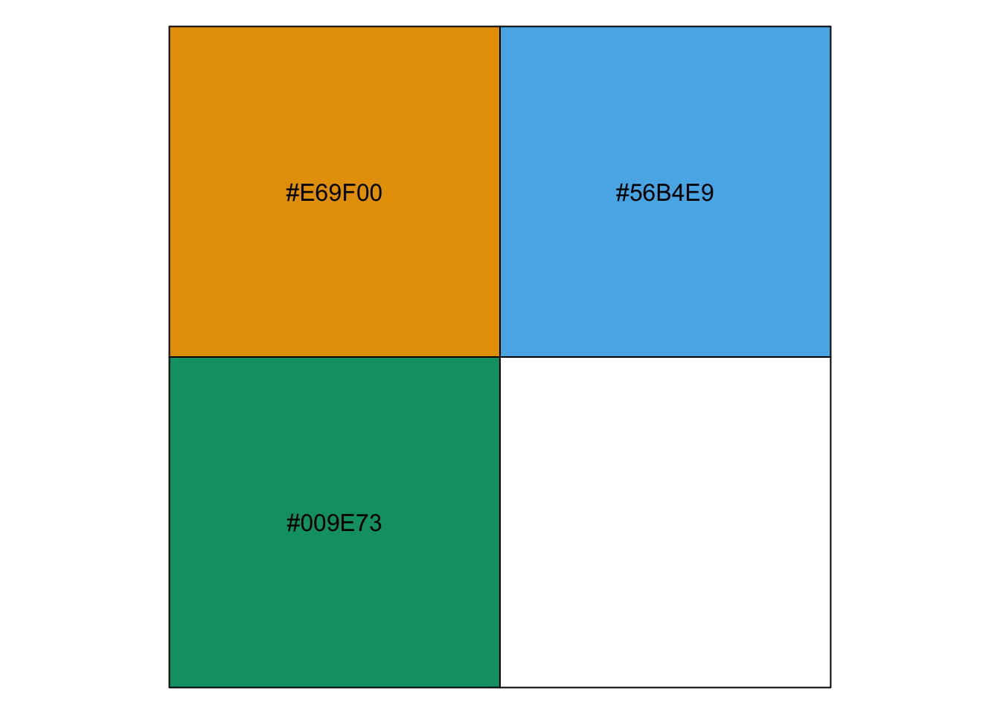

Q and A
Purpose
In the article below I share the help that I provided to students who asked about manual colour palettes in Stata and how to calculate Moran’s I in Stata, a measure of spatial autocorrelation.
Choose specific colours for choropleth
Q: Could you help me with the code and command I need to use in Stata to change the color of a specific region in a choropleth map?
A: Sure! We can choose our own colours for a palette with their RGB codes
RGB colour codes
What are RGB Color Codes?
RGB color codes are a set of numerical values used to specify colors in digital devices such as computers, televisions, and smartphones. RGB stands for red, green, and blue, which are the primary colors used in digital displays. Each color is represented by a value between 0 and 255, with 0 indicating no intensity and 255 indicating maximum intensity.
Using RGB Color Codes
RGB color codes are commonly used to specify different types of colors, including those used in web design, graphic design, and data visualization. For example, the color “midnightblue” can be represented by the hex code 191970 or the RGB values (25, 25, 112). In this case, the first two digits of the hex code represent the intensity of red, the second two digits represent green, and the last two digits represent blue. Similarly, the RGB values represent the intensity of red, green, and blue, respectively.
In data visualization, RGB color codes are often used to create choropleth maps that display different colors based on the value of a particular variable in a specific region. By using RGB color codes, users can create maps that are visually appealing and easy to interpret.
First you can choose your colours by Googling a colour that you like and copying across it’s rgb code:
In this case we want three colours for three different groups. Let’s choose some from the Okabe-Ito palette.
Next in Stata we import the data
# set up
clear all
set more off
use regional_dataset, clearNow we create some groups
# manual legends
keep if country == "France"
# set groups
gen groups = .
replace groups = 1 if region == "Alsace" | region == "Champagne-Ardenne" | ///
region == "Bretagne" | ///
region == "Franche-Comté" | region == "Languedoc-Roussillon" | ///
region == "Lorraine" | region == "Midi-Pyrénées" | region == "Nord - Pas-de-Calais" | ///
region == "Provence-Alpes-Côte d'Azur" | region == "Corse" | region == "Picardie"
replace groups = 2 if region == "Aquitaine" | region == "Auvergne" | region == "Basse-Normandie" | ///
region == "Bourgogne" | ///
region == "Centre" | region == "Centre" | region == "Centre" | region == "Centre" | ///
region == "Haute-Normandie" | region == "Limousin" | region == "Pays de la Loire" | ///
region == "Poitou-Charentes" | region == "Rhône-Alpes"
replace groups = 3 if region == "Île de France"Now we can map the data, putting our RGB colour codes into the fcolor command: fcolor("230 159 0" "86 180 233" "0 158 115"). In addition, we label our groups in the legend and set appropriate breaks with the clbreaks command.
# Orange: "230 159 0"
# Blue: "86 180 233"
# Green: "0 158 115"
# Put the rgb values for the colours into the `fcolor` command, and then put the labels into the legend.
spmap groups using "nutscoord.dta" if year == 1950, id(_ID) fcolor("230 159 0" "86 180 233" "0 158 115") legend(pos(9)) legstyle(2) ///
title("Regional GDP per Capita - 1950", size(medium)) ///
osize(0.02 ..) ocolor(white ..) ///
clmethod(custom) clbreaks(0 1 2 3) ///
legend(order(2 "MLP" 3 "EM" 4 "JLM"))This is what the map looks like:
Moran’s I
Q: How do I calculate Moran’s I in Stata?
A: We need to calculate the spatial weighting matrix, and then calculate Moran’s I.
Moran’s I
Moran’s I is a measure of spatial autocorrelation–how related the values of a variable are based on the locations where they were measured. In other words, global spatial autocorrelation measures the extent to which regions are interdependent.
To calculate Moran’s I, first we need to calculate the spatial weighting matrix. This matrix shows us how far each region is away from every other region. To calculate this matrix, we need to find the midpoint of each region. There are multiple ways to do this, but we will go with the simplest, which is to take the mean of all of the coordinates that make up the polygon.
We install the user written command that allows us to calculate the spatial weighting matrix sg162.
clear all
set more off
# Install required user written command
ssc install sg162Next we find the mean x and y coordinates of each region and join this to our data from the regional_dataset.
use nutscoord, clear
bysort _ID: egen mean_x = mean(_X)
bysort _ID: egen mean_y = mean(_Y)
keep _ID mean_x mean_y
duplicates drop
merge 1:m _ID using regional_dataset
keep if _merge == 3
drop _mergeNext we choose a year to calculate Moran’s I for:
keep if year == 2000And calculate the spatial weighting matrix with the spatwmat command.
The band option allows us to drop any outliers which are too far away to be considered neighbours. We include all regions by setting the band’s upper bound very high.
spatwmat, name(nutsweights) xcoord(mean_x) ycoord(mean_y) band(0 1.2e+06 )The output that we get looks like this:
To calculate Moran’s I for 2010 with regional GDP per capita, we use the weights we have calculated and the following command:
spatgsa regional_gdp_cap_1990, weights(nutsweights) moranThe output looks like this:
Based on these results, we can reject the null hypothesis that there is zero spatial autocorrelation present in the variable regional_gdp_cap_1990 at alpha = .05. In other words, regional GDP per capita is related to geography in 2010.